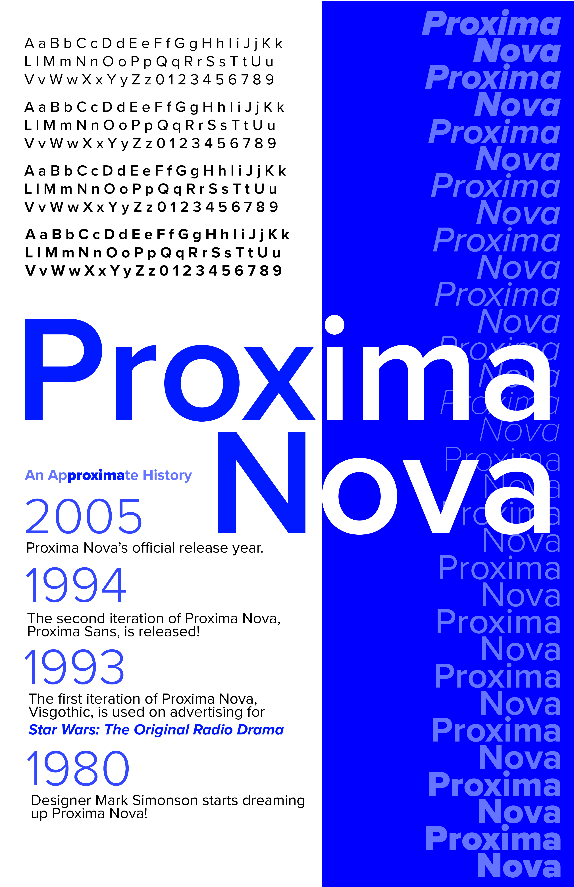
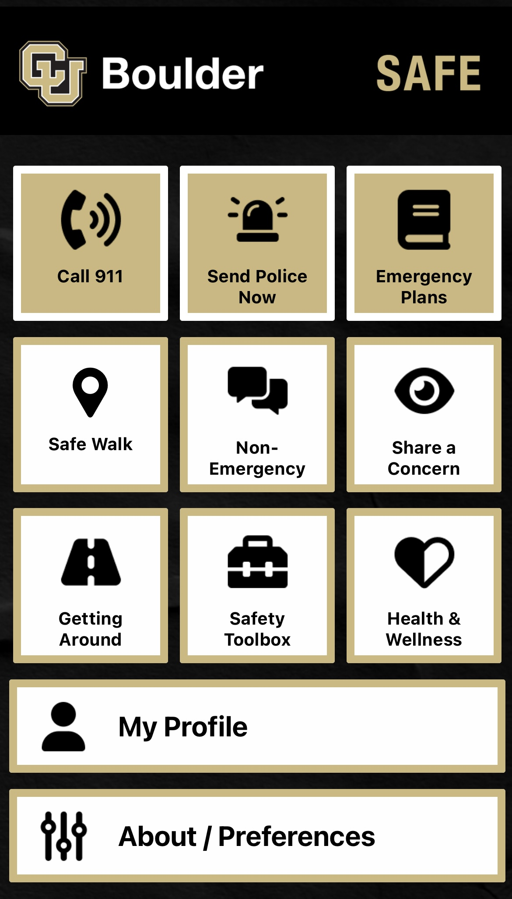
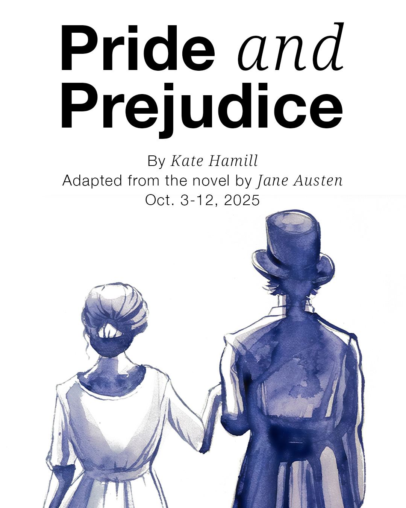

What's Up with Averie?
Hot off the presses October 1st, 2025
Academics
My favorite class right now is "Text" with Professor Danny Rankin in the Roser ATLAS Institute! I am learning more in-depth Adobe Illustrator skills and about the rhetoric of font and content choices in professional advertising and print making.
Career
My most recently project was for CU Boulder Safe, which is a CU community safety application for students, faculty, and staff. We worked closely with the CU Boulder Police Department to conduct initial interviews and user research on the usability of the application as it initially came from its parent company, AppArmor.
Life
I am Jane Bennet in CU Presents' production of Pride and Prejudice directed by James Early! This is my first production with the official CU Presents Theater Company, as I am normally involved in the student-run Sandbox series. I am enjoying bringing such a classic story to life!